The Climb's props, one by one: The Sands (floors 21 to 30)
2026-11-14. The user: "lets look at all props one by one and make the correct". Every kind was looked at on its own (the sheet at the end), every floor walked with the probe (pipeline/tools/climb-props-probe.js: every piece measured against the ground as drawn) and the shapes check (climb-shapes-probe.js: parts that do not meet), and each fault fixed at its cause, so every floor of the chapter gets it. Pictures: pipeline/tools/climb-props-shots.js, the same spot before (the branch's base, 281b428) and after; low views are a camera set down beside the prop, the others the game's own camera.
Nothing else moved: every scene of the thirty floors is where it was (scene lists compared floor by floor, 0 differences), the fights are the same (the perf tool's fight prints 45b46573, 988f012d, da05c457 on floors 21, 31 and 41 before and after), and no fix makes a new object on the game's random stream.
The probe, before and after (walkable ground and the edge, all ten floors)
| What | Before | After |
|---|---|---|
| Things in the air (no point within 5 cm of the ground) | 298 | 26 |
| Pieces standing on the ground with light under one side | 41 | 28 |
| Pieces of the depth or the scenes through cover | 58 | 21 |
What is left is listed under "Seen but left" with the reason.
The faults (17)
Lying amphora (amphorae scenes, the loads along the roads)
Wrong: Its neck and brass ring lay 14 cm off its body, its foot 2 cm off: a gap of light through the jar.
Cause: The shapes kit's `cyl` stands on its base, but the neck was placed as if centred, so it ran outward from where the body should meet it.
Fix: Neck, ring and foot moved onto the body (`amphoraLying` in scenes/sands.ts).
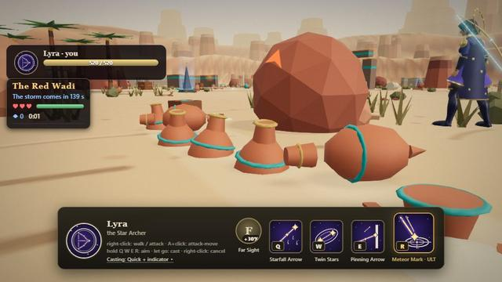
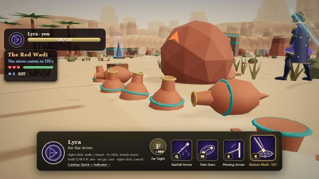
Lying jar, sacks, waterskins (wells, rests, the caravan, the loads)
Wrong: Necks 4 to 6 cm off their bodies, ties and stoppers beside them.
Cause: The same base-standing cylinder placed as if centred.
Fix: Each neck from inside its body to its tie (`jarLying`, `sack`, `sackHide`, `waterskin`).
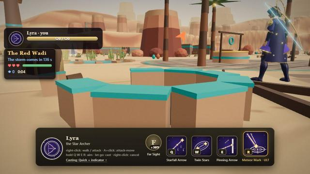
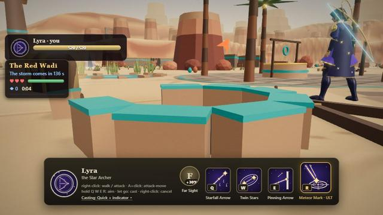
Lying basket and bucket (the dig, the dry well)
Wrong: The body lay 17 to 34 cm off its own rims, the basket's mouth turned away from the grain it spilled.
Cause: The base-standing cylinder turned the wrong way round.
Fix: Turned the other way: rim at the mouth, spill in front of it (`basketLying`, `bucketLying`).
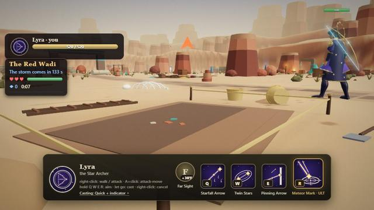
Cushions on the travellers' rugs
Wrong: Their four brass tassels hung in the air beside the corners.
Cause: Tassels placed outside the cushion's rounded shape.
Fix: Tassels on the cushion's corners (`cushionWine`, `cushionTurq`).
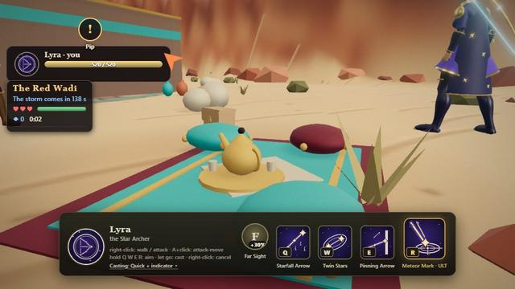
Caravan cart bed
Wrong: Its two side boards, "fallen outward", were under the sand: the bed lay bare.
Cause: Each board was turned about the shape's centre after being moved out, which swung it down under the ground.
Fix: Turned in place, then moved out: both boards lie on the sand by the bed (`cartBed`).
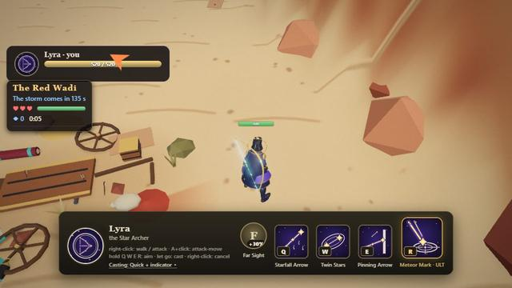
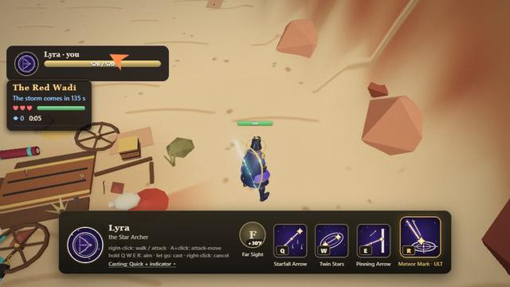
Lantern, windlass crank, lying post (caravan, dry well)
Wrong: The lantern's loop 4 cm past its tip; the windlass handle 3 cm off its drum; the lying post's brass cap 0.86 m under the sand.
Cause: Parts placed a hand's breadth off; the cap turned about the centre, like the boards.
Fix: Each part on its piece (`lantern`, `drum`, `postLying`). The lying post is in the waterwheel scenes too: the probe's pieces wholly under the walkable sand went from 45 to 0. These parts are too small to see in a pair from the game; the shapes check shows each one meeting its piece now.
Broken obelisk (sundial scenes, second layout)
Wrong: Its gilt tip sat at the pyramidion's base, not its point.
Cause: Both parts turned the wrong way.
Fix: Turned so the gold caps the apex (`pyramidion`). None of the sundial scenes I shot uses this layout, so there is no pair; the shapes check shows the gold tip now on the point, its width matching the point's there.
Road well bucket
Wrong: The bucket hung in the air under the beam, with no rope.
Cause: No rope was drawn.
Fix: A rope from the beam to the bucket (sandsDepth.ts `roadWell`).
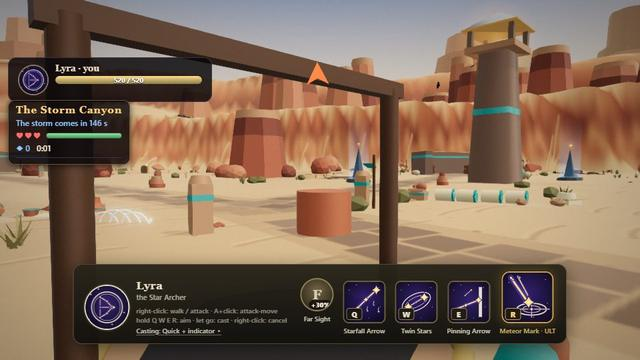
Cover well at the oases and wells
Wrong: Its turquoise rope coil hung in mid-air between the posts.
Cause: No rope was drawn.
Fix: A rope from the beam to the coil, drawn by the depth in a shape the floor already has (no new object on the game's random stream).
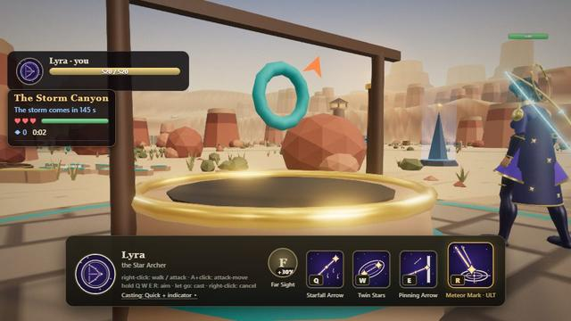
Prayer flags at the shrines
Wrong: The flags hung 10 cm under their line and beside it.
Cause: Each flag was centred at a height, then tilted by the wind, so its top edge moved off the line.
Fix: Each flag hangs from the line by its top edge (sandsDepth.ts `flags`).
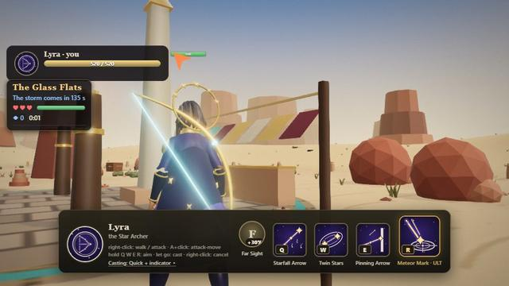
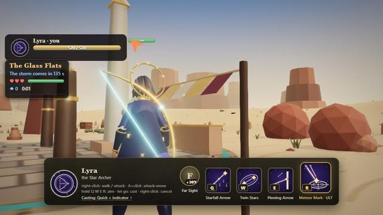
Hide on the raiders' drying rack
Wrong: The hide's top edge hung under the bar and beside it.
Cause: The same: centred, then tilted.
Fix: The hide hangs from the bar (`hideRack`).
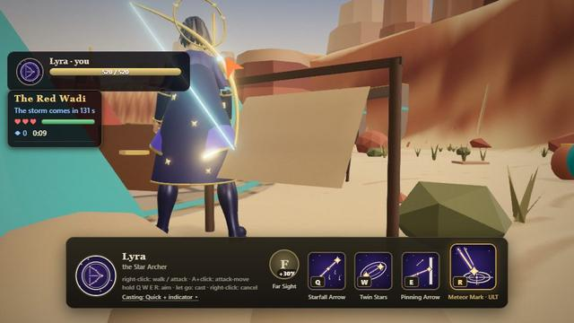
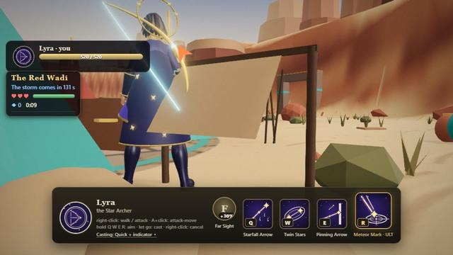
Tomb urns
Wrong: On the larger urns the brass knob stood up to 3 cm above the lid.
Cause: The knob's height grew with the urn faster than the lid's.
Fix: The knob on the lid (`urn`).
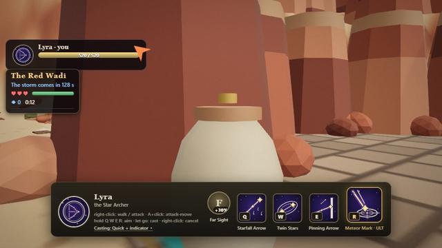
Broken statue's torso
Wrong: The fallen torso lay 10 cm above the sand.
Cause: Its height did not count the four-sided shape's narrower flat side.
Fix: On the sand (`statue`).
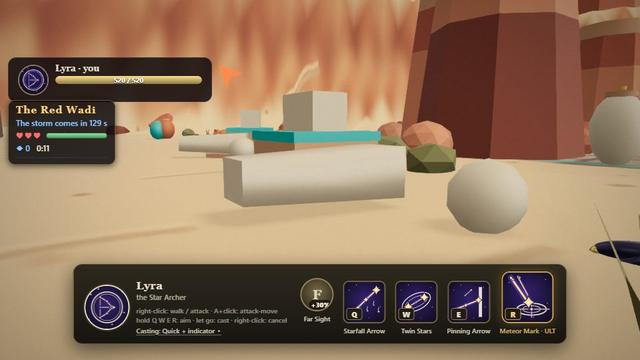
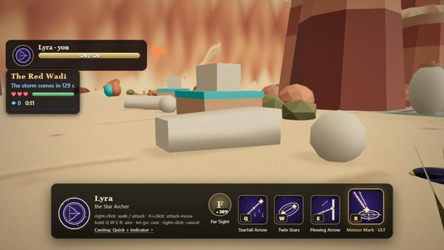
Ladder at the dig
Wrong: The ladder lay 5 cm above the sand, its rungs inside its rails.
Cause: Placed at 5 cm.
Fix: Rails on the sand, rungs on the rails (`ladder`).
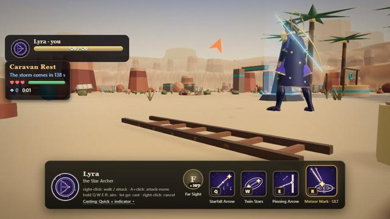
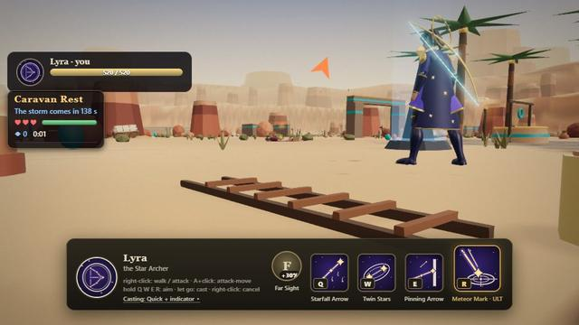
The dig's pegged grid
Wrong: Its ropes and pegs ran through a fallen column that is cover.
Cause: The grid was laid over the court whatever stood on it.
Fix: A rope a cell; no rope or peg on cover.
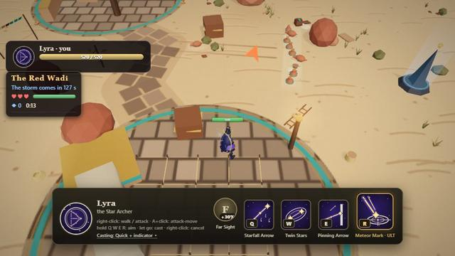
The gateway in the middle (floors 22-30) and the bridge arch (21)
Wrong: The lintel lay across its two piers instead of along them, 7.2 m long between piers 11 m apart: a block hanging in the air between them.
Cause: The lintel's turn was a quarter turn off, and its length fixed.
Fix: Along the piers, as long as they are apart (sandsZone.ts, the decor loop).
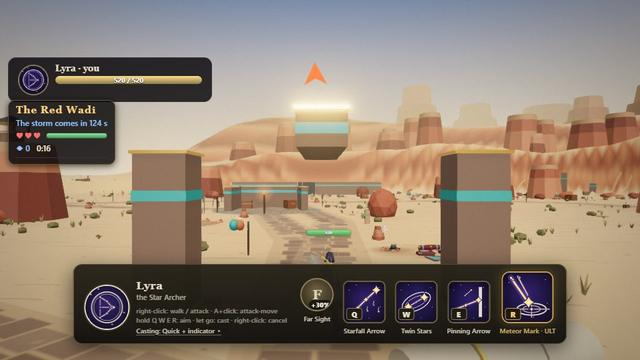
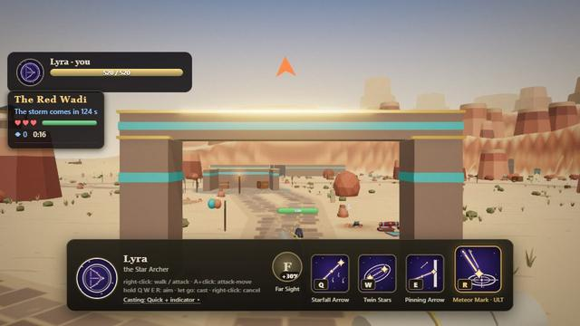
Ruined arches at the cliffs' foot
Wrong: Both piers stood at the arch middle's height; on the slope one stood up to 1.8 m off the ground, the other sank into it.
Cause: One height for the whole arch.
Fix: Each pier on the lowest ground under it, the lintel on the higher pier's top.
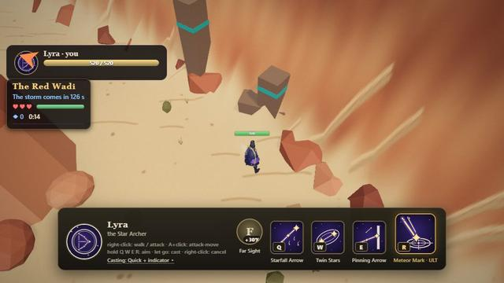
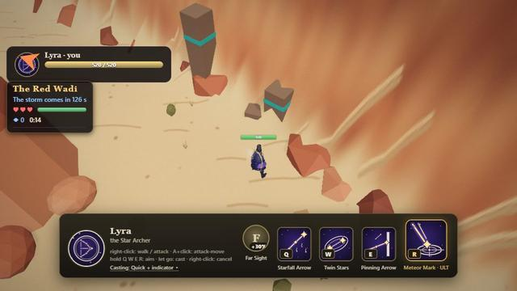
Floor 21's bridge arch over the rival's door (the same fix as the gateway)
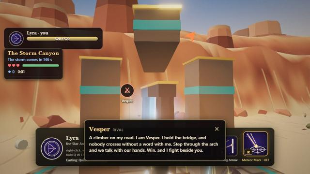
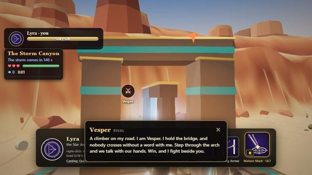
Seen but left
2026-11-15: the grass and shrubs on the cliffs and banks, and the War's scenes past the edge off their hills, are fixed: cliffs and hillsides.
- Shrubs and grass tufts on the cliffs and at the edge stand 5 to 30 cm above the drawn ground in places: they sit on the ground's formula, and the drawn ground (2.1 m triangles) cuts under it on the steep parts. Small, mostly past the edge; fixing it means looking the height up in the drawn ground (shared land code), so left.
- The arches' turquoise bands and a lintel on floor 24 meet the cliff behind them: the probe counts them, but they are an arch standing against the rock, held by its piers.
- The new rope of a cover well stands inside the well's own cover round: it belongs to the well.
Every kind, and where it is built
- Scenes (scenes/sands.ts, `KINDS`, shapes in `makeProtos`)
- caravan, fight, dig, well, rest, sundial, shrine, grave, jackal (past the edge or against a rock), wagon (past the edge), pots, ribs (past the edge), tent, amphorae, waterwheel; between them the echoes crate, sack, jar, arrows, wheel, basket, amphora (`ECHOES`)
- The depth (sandsDepth.ts `build`)
- roads: milestone, cairn, waymark, beast's bones, broken cart, road well; places: rugs, bedrolls, fire pot, sacks, jars, awning, urn, broken statue, the dig's grid, ladder, rope coils, basket, sieve, pool stones, reeds, small palms, spears, hide rack, rubble, column drums, weapon rack, firewood, offering bowls, prayer flags, stone trough; open sand: scrub, thorn, stones, slabs; far: ruined arches, the camel caravan, vultures
- The zone's cover and dressing (sandsZone.ts)
- buttes and boulders, crates, the well, the spring, glazed jars, tents, low walls, dressed-stone walls, fire bowls, the watchtower, obelisks, columns, palms, piers, lantern posts, a fallen column, a fallen obelisk, a broken cart, the gateway's lintel; lanterns at the places, markers and fallen rock at the edge, buttes on the cliffs, mesas in the haze, shrubs
The sheet: every scene kind on its own (the game's camera with the hero beside it, then low)
One of each kind and layout, in place on a floor of the chapter (the Sands and the Deep two of each, on two floors). Looked at one by one; what was wrong is in the faults above.
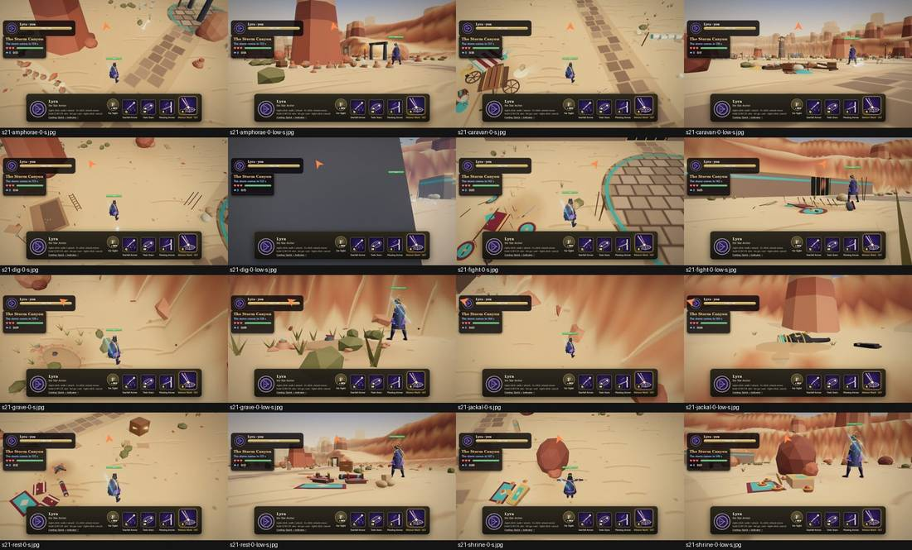
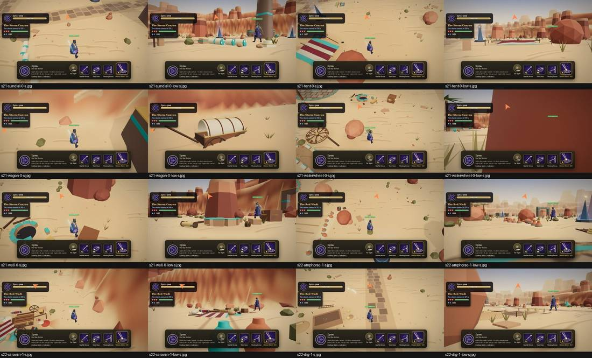
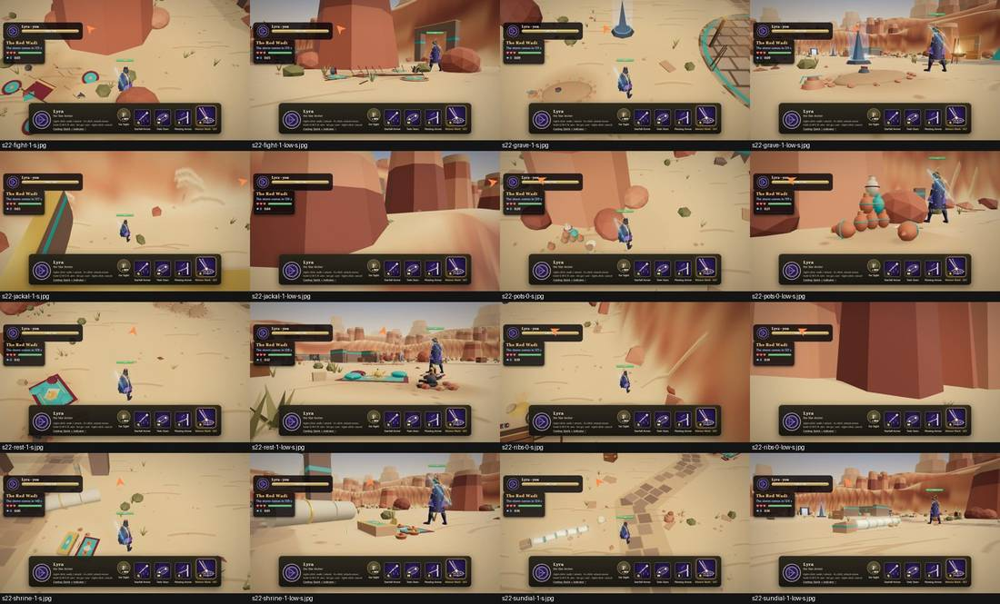
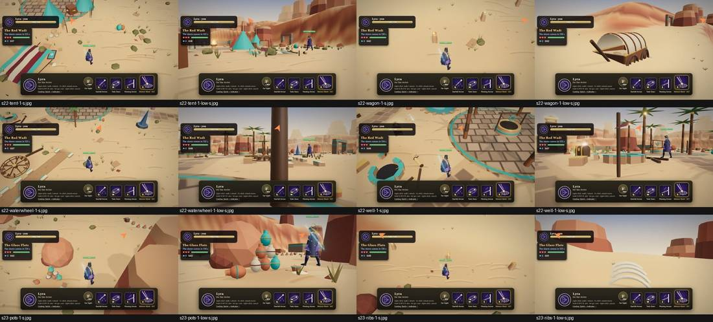